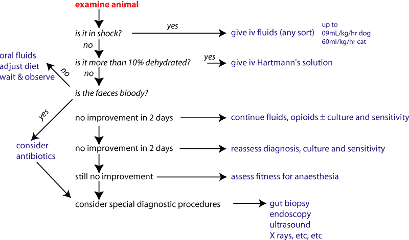

An animal with diarrhoea loses water and ions. These are replaced using fluids,
either intravenously or by mouth.
Fluids are covered in more detail in the cardiovascular pharmacology notes.
As a general rule, it is a good idea to replace what has been lost with something
similar. Thus the major component of vomit, diarrhoea and fluids is water. Various
ions are important, and sometimes proteins (mainly for their osmotic effects).
In vomiting, lots of H+ and Cl- are lost and a metabolic alkalosis develops.
The kidney tries to compensate for H+ losses by excreting K+ so a hypokalaemia
can develop. If the vomiting is severe, the animal will not be able to keep
water down; excessive loss in vomit and a lack of intake mean it will dehydrate
rapidly. Thus a vomiting animal needs water (water normally follows Na+ around
the body), H+, Cl- and possibly K+.
In diarrhoea, lots of K+ and HCO3- are lost as well as water and Na+.
In some gut disease (usually more chronic) plasma proteins and red blood cells
are lost.
It is best to get the animal to drink the fluids, but this is not possible in
many cases, and they have to be given iv. The usual object of treatment is to
get the animal’s kidneys working - they are much better at calculating
the animal’s requirements than most vets!
Very important in large animal medicine and to a lesser extent in small animals. They are used in cases of minor fluid deficits or to supply maintenance fluid requirements but economics often dictates their use even in more severe dehydration. Most solutions contain glucose (or sucrose) and amino acids (usually glycine) to take advantage of the cotransport pathways for the absorption of electrolytes and organic molecules, in addition to water and electrolytes. During acute diarrhoea (especially secretary diarrhoea but including rotaviral diarrhoea) such sodium-coupled organic solute absorption remains largely intact. It is very important that solutions are approximately isosmolar (300-350 mOsm) otherwise iatrogenic osmotic diarrhoea occurs. The desire to provide more organic substrate (and hence greater fluid and electrolyte absorption) but not exceed osmolality limits, has led to the recent usage of ORS containing synthetic glucose polymers or glucose and amino acid polymers derived from foods. Cooked cereal powders (especially rice) have proved suitable for this purpose.
Compound sodium lactate infusion (Hartmann’s solution, Lactated Ringer's) is the fluid of choice for the replacement of fluid deficits caused by vomiting and/or diarrhoea. It has sufficient lactate (a bicarbonate precursor) to prevent the "dilutional acidosis" caused by the dilution of serum bicarbonate by intravenous fluid. It does not have enough alkalizing power to neutralize large quantities of circulating acids, but by improving circulating volume it reduces tissue ischaemia and anaerobic metabolism. As a result, production of lactic acid is reduced and the liver metabolizes circulating lactic acid correcting the lactic acidosis resulting from the hypovolaemia. Lactated Ringer's contains calcium which can result in incompatibilities when drugs are added to the fluids. Although lactated Ringer's contains small amounts of potassium (4 mEq/L), additional potassium is usually required for the replacement of the major losses of potassium that occur with vomiting or diarrhoea. For this reason, the fluid is usually spiked with an additional 10-20 mEq of KCl per litre. Lactated Ringer's contains too much sodium for long term maintenance of animals without major on-going losses of sodium in vomiting or diarrhoea. In this situation, it should not be used for longer than 3 days before a lower sodium "maintenance" fluid is substituted (eg dextrose saline or Lactated Ringer's diluted 50:50 with 5% dextrose).
0.9% sodium chloride is a high sodium, mildly acidifying fluid. Its primary use is in dogs and cats is the treatment of alkalosis resulting from vomiting due to obstructions of the pylorus or upper duodenum, or administration of drugs by infusion that are not compatible with Hartmann's. It is also often used in the treatment of calf scours (along with bicarbonate) and upper gastrointestinal complaints in cattle because it is (marginally) cheaper than Hartmann's. It does not contain calcium so most drugs can be added to the fluid without risk of incompatibility (eg sodium bicarbonate). The fluid does not contain potassium and 15-25 mEq/L should be added prior to use in most gastrointestinal complaints after tthe first day.
Sodium bicarbonate is often added to sodium chloride if a potent alkalizing fluid is required to treat severe acidosis (eg pH below 7.2) . The amount of bicarbonate to add to the fluids can be calculated from blood gas results. If these are not available a rule of thumb is 1-2 mEq of sodium bicarbonate per kg bodyweight.
